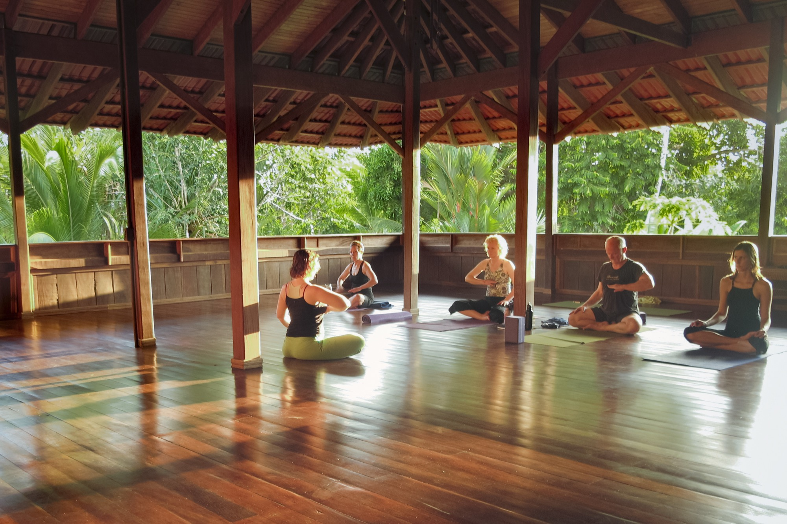
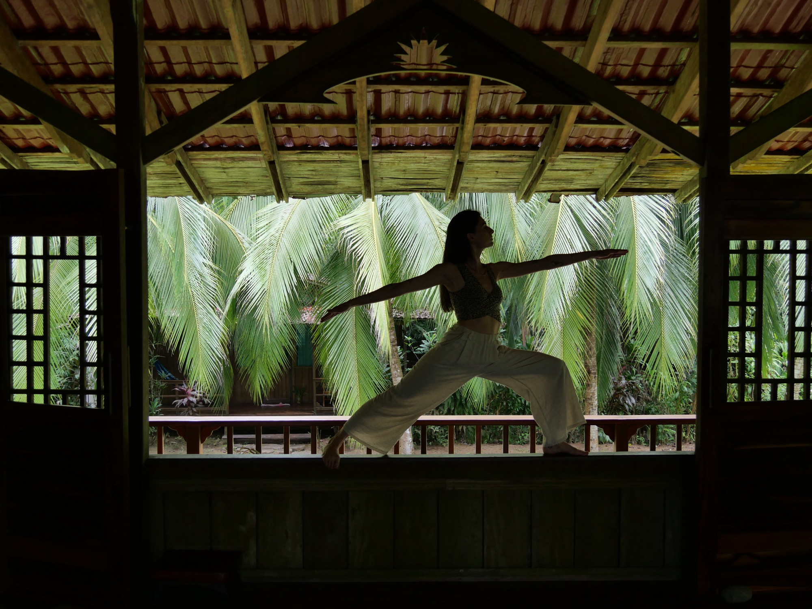
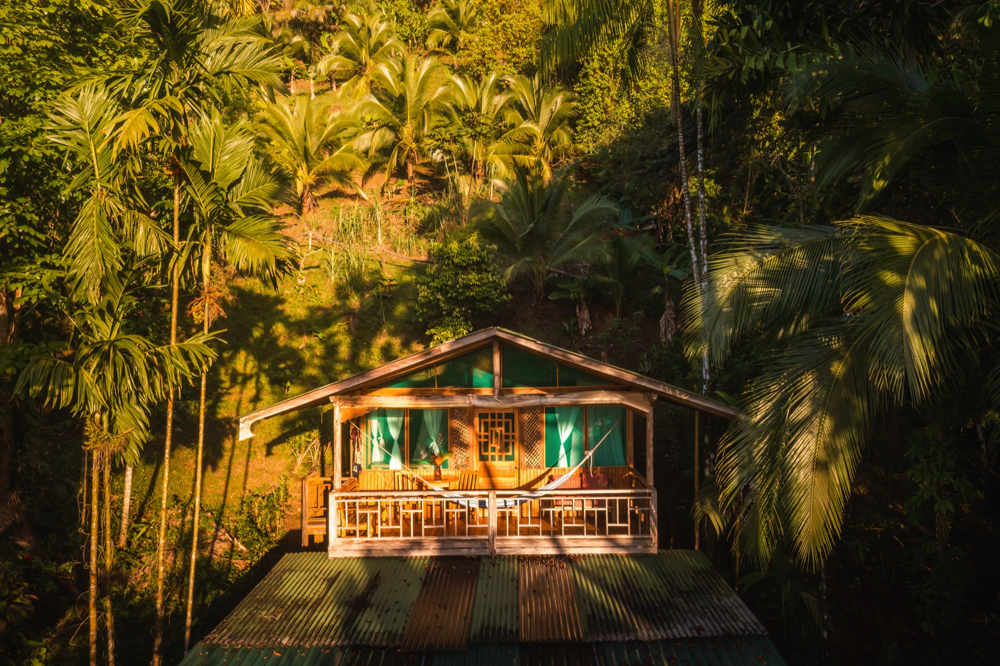
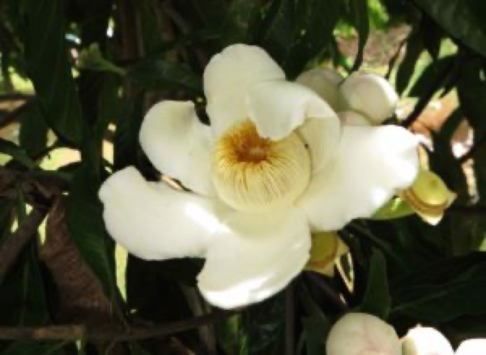
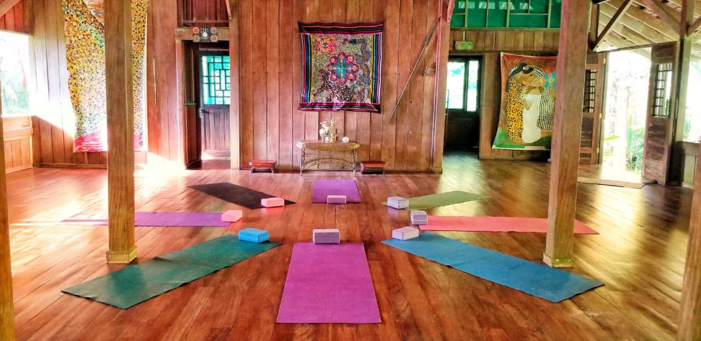
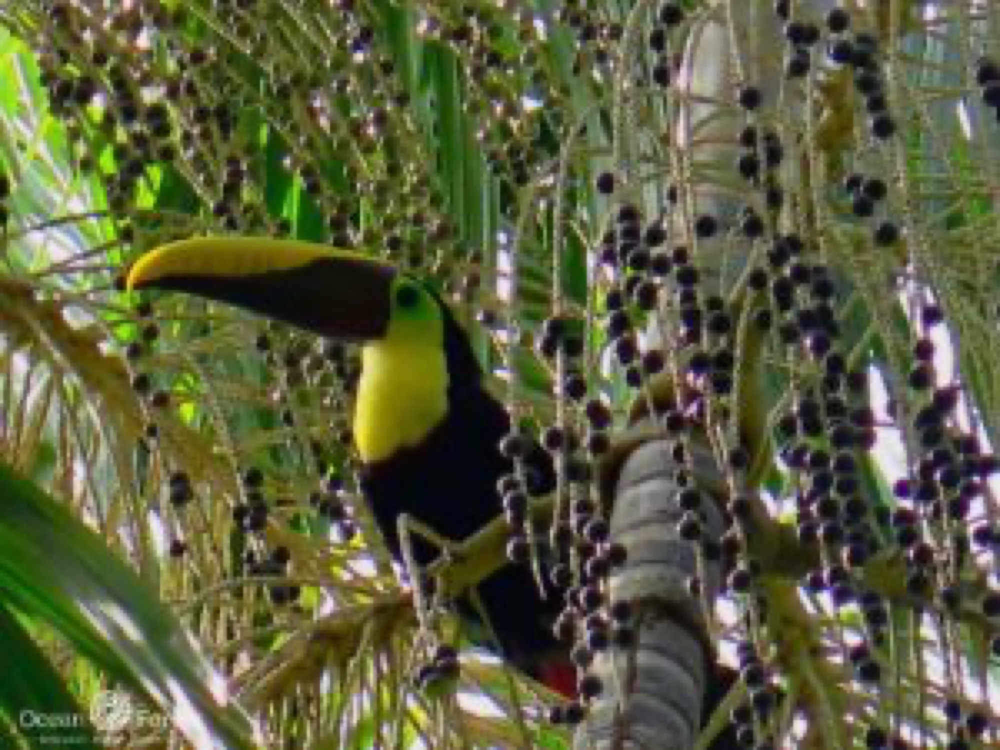
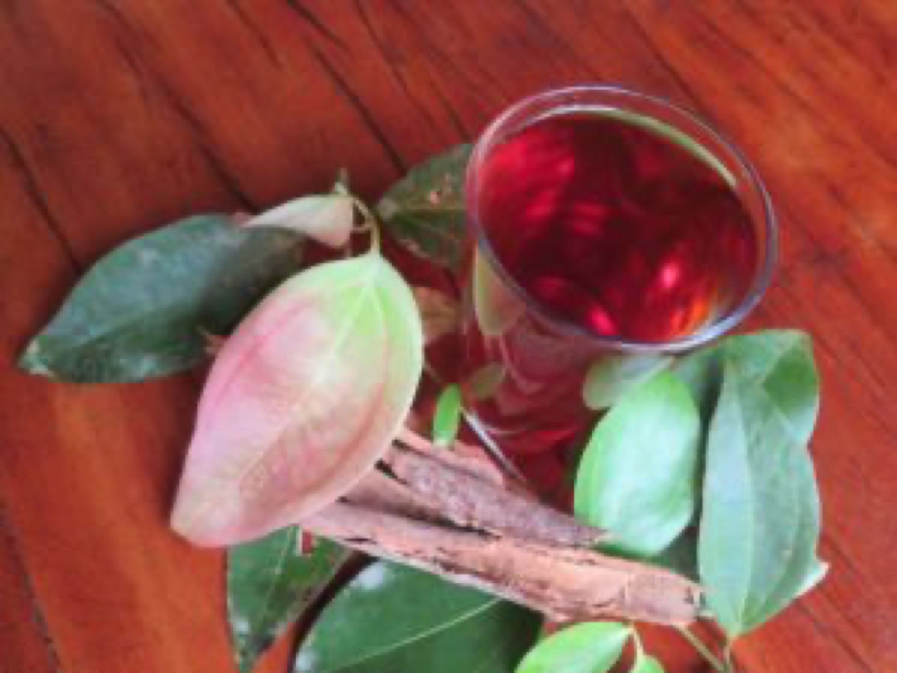
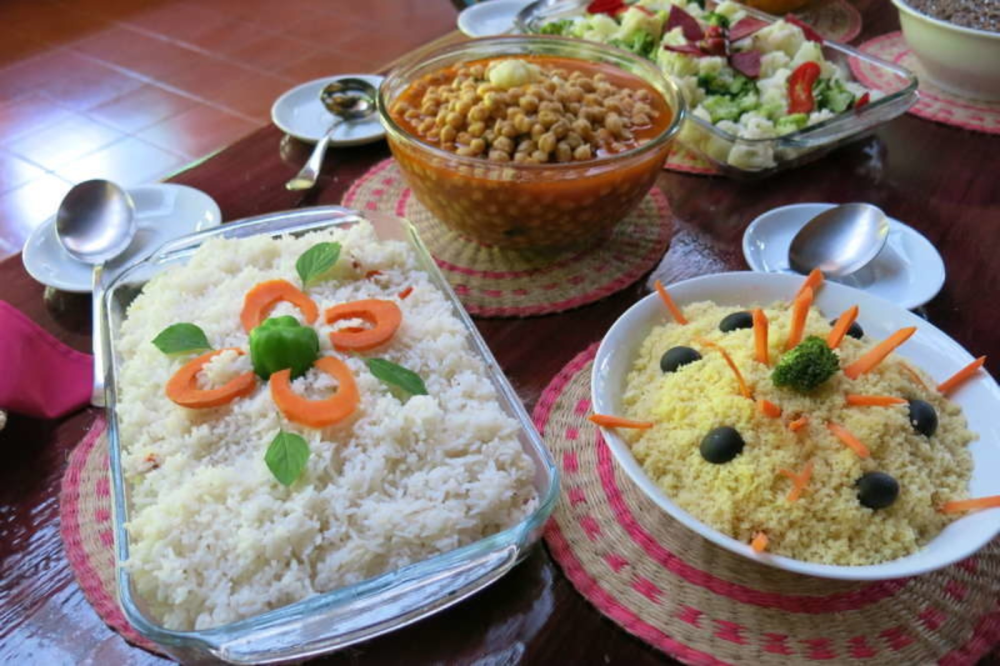

Yoga & Breath
Yoga & Pranayama Weeks
Twice-daily practice on the canopy floor — vinyasa, hatha, restorative, classical pranayama and yoga nidra. The Pacific surf carries through the back of every class.

The Dharma Hall opens onto the garden. We host our own seasonal retreats here, and welcome a small number of visiting teachers each year — yoga, breathwork, sound, plant medicine, and the slow work of paying attention.
We didn't set out to build a retreat centre. The Dharma Hall came later — when enough teachers had visited the lodge and asked if there was somewhere they could hold a circle, run a week of yoga, sit a longer practice. So we built one. It's a hundred-and-fifty square metres of open-air floor on the ground level of Lapa Lapa, framed by hardwood columns, with the garden on one side and the path to the beach on the other. Most days it begins quietly at dawn and ends quietly at dusk.
If you're hosting a retreat, we'd love to talk. If you're looking for one, write to us — we keep a small list of upcoming dates that we share by email.
A hundred-and-fifty square metres on the ground floor of the main lodge — enough for thirty mats with room to move. Hardwood floor, ceiling fans, side curtains for the rare grey afternoon, sound system on request.

A few of these we run ourselves. Most are led by visiting teachers we've come to trust. Write to us for upcoming dates and openings.

Twice-daily practice on the canopy floor — vinyasa, hatha, restorative, classical pranayama and yoga nidra. The Pacific surf carries through the back of every class.

Ceremonial cacao, council practice, breath journeys, integration in nature. Held by visiting facilitators with long lineages and careful hands.

Field weeks in the lodge's 15-acre ethnobotanical garden — medicinal botany of the tropical Americas, tincture-making, conversations with indigenous neighbours.

Gong baths, hydrophone listening to the bay, deep rest, silent half-days. For practitioners who want to listen for a change.

Hands-on weeks in our 15-acre living laboratory — soil, water, polyculture, food forests, community design. Co-led by our head gardener.

Plein-air weeks for writers, painters and field illustrators. The rainforest does most of the inspiration; we provide the desk and the kayaks.

We welcome a small number of visiting teachers each year — yoga schools, women's circles, leadership retreats, climate intensives. Whole-property buyouts give your group exclusive use of all ten rooms, the Dharma Hall, the kitchen, and our team.
We handle the logistics so you can hold space — transport, dietary planning, excursions, talent referrals. Write to us with the shape of what you'd like to build.
Host a retreatSingle, double or shared depending on the retreat. All en-suite, all with private veranda.
Three meals a day from the property's permaculture garden — vegan, vegetarian and gluten-free always available.
The full programme led by your visiting teacher. Number and rhythm vary by retreat.
Daily naturalist garden walk, full use of kayaks and snorkel gear, beach orientation.
Ground and boat transfer from the airstrip or village to the lodge.
A portion of every booking funds the marine turtle patrols and the on-site botanical garden.